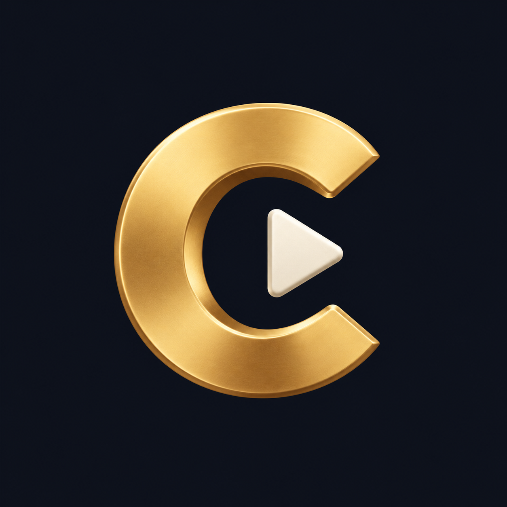

Spigot
Plumber's calculator: offsets, cut lengths, fall and flow
Spigot is an iPhone calculator built for plumbers on site. Big, glove-friendly keys, huge high-contrast results you can read in the sun, and every answer shows its working.
- Offset: travel and run for 11¼°, 22½°, 30°, 45°, 60° and 90° fittings, with cut length after take-offs.
- Rolling offset: rise and roll at once, true offset, setback and how far to roll the fitting.
- Cut length: measure centre or face of fittings, pick the fitting, and Spigot takes off the allowance.
- Fall: 1:40, 1:60 or any grade as total fall, percent and mm per metre, plus finish invert level.
- Volume & flow: litres in a pipe, flow and velocity, and Hazen–Williams pressure loss.
- Cut list: fit your lengths into 6 m stock with the fewest lengths and least waste.
- Jobs: save results to a job for each site. Everything stays on your phone.
Millimetres first, inches with fractions at a tap. Free download: Offset, Fall and the Reference cards are free forever. A free 7-day trial, then one payment unlocks everything. No subscription, no ads, no account, no data collected.